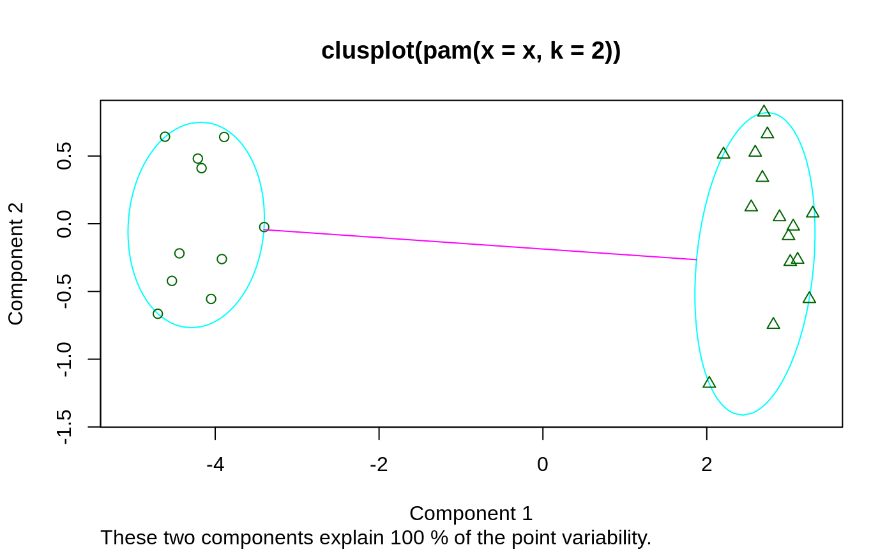
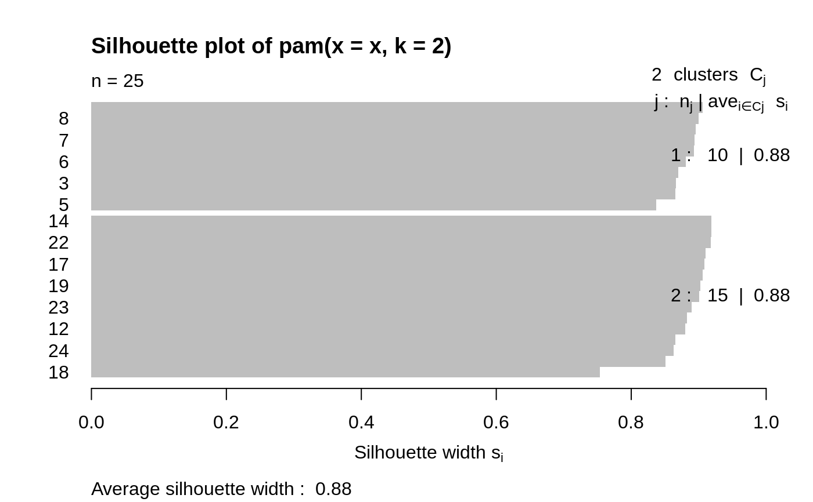
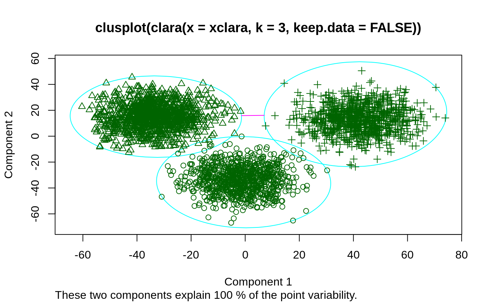
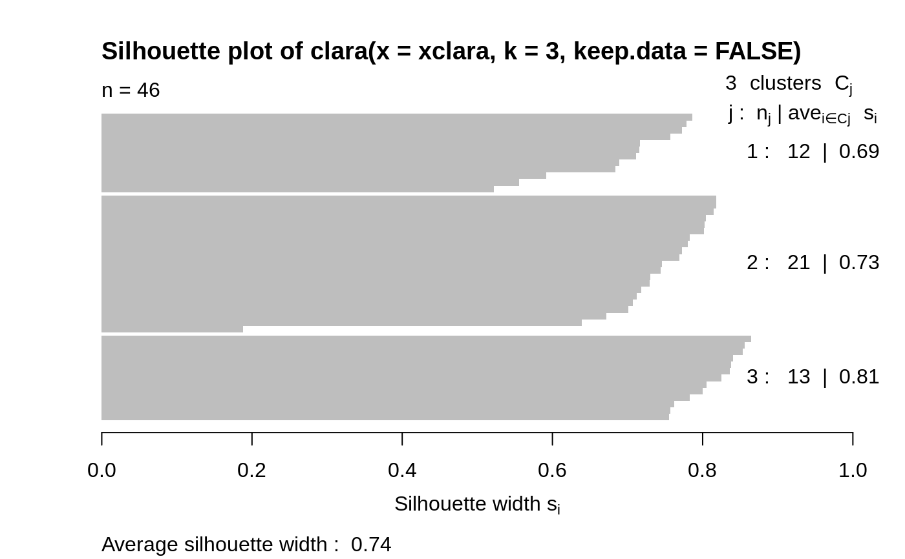

plot.partition.RdCreates plots for visualizing a partition object.
# S3 method for partition plot(x, ask = FALSE, which.plots = NULL, nmax.lab = 40, max.strlen = 5, data = x$data, dist = NULL, stand = FALSE, lines = 2, shade = FALSE, color = FALSE, labels = 0, plotchar = TRUE, span = TRUE, xlim = NULL, ylim = NULL, main = NULL, ...)
| x | an object of class |
|---|---|
| ask | logical; if true and |
| which.plots | integer vector or NULL (default), the latter
producing both plots. Otherwise, |
| nmax.lab | integer indicating the number of labels which is considered too large for single-name labeling the silhouette plot. |
| max.strlen | positive integer giving the length to which strings are truncated in silhouette plot labeling. |
| data | numeric matrix with the scaled data; per default taken
from the partition object |
| dist | when |
| stand,lines,shade,color,labels,plotchar,span,xlim,ylim,main, ... | All optional arguments available for the |
An appropriate plot is produced on the current graphics device. This
can be one or both of the following choices:
Clusplot
Silhouette plot
When ask= TRUE, rather than producing each plot sequentially,
plot.partition displays a menu listing all the plots that can
be produced.
If the menu is not desired but a pause between plots is still wanted,
call par(ask= TRUE) before invoking the plot command.
The clusplot of a cluster partition consists of a two-dimensional
representation of the observations, in which the clusters are
indicated by ellipses (see clusplot.partition for more
details).
The silhouette plot of a nonhierarchical clustering is fully
described in Rousseeuw (1987) and in chapter 2 of Kaufman and
Rousseeuw (1990).
For each observation i, a bar is drawn, representing its silhouette
width s(i), see silhouette for details.
Observations are grouped per cluster, starting with cluster 1 at the
top. Observations with a large s(i) (almost 1) are very well
clustered, a small s(i) (around 0) means that the observation lies
between two clusters, and observations with a negative s(i) are
probably placed in the wrong cluster.
A clustering can be performed for several values of k (the number of
clusters). Finally, choose the value of k with the largest overall
average silhouette width.
In the silhouette plot, observation labels are only printed when the
number of observations is less than nmax.lab (40, by default),
for readability. Moreover, observation labels are truncated to
maximally max.strlen (5) characters.
For more flexibility, use plot(silhouette(x), ...), see
plot.silhouette.
Rousseeuw, P.J. (1987) Silhouettes: A graphical aid to the interpretation and validation of cluster analysis. J. Comput. Appl. Math., 20, 53--65.
Further, the references in plot.agnes.
partition.object, clusplot.partition,
clusplot.default, pam,
pam.object, clara,
clara.object, fanny,
fanny.object, par.
## generate 25 objects, divided into 2 clusters. x <- rbind(cbind(rnorm(10,0,0.5), rnorm(10,0,0.5)), cbind(rnorm(15,5,0.5), rnorm(15,5,0.5))) plot(pam(x, 2))## Save space not keeping data in clus.object, and still clusplot() it: data(xclara) cx <- clara(xclara, 3, keep.data = FALSE) cx$data # is NULL#> NULL